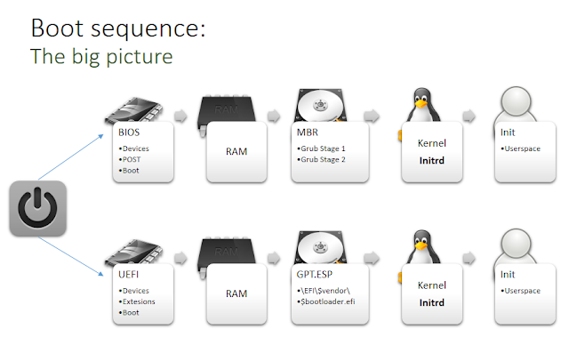

Booting a computer is a complex process involving several components working in unison from the moment it powers on. After pressing the 'on' button, the motherboard receives power, initiating device setup routines.
The CPU registers initialize with default values, and then the BIOS/UEFI code runs, depending on the motherboard model and system configuration.

When using BIOS, the boot process identifies the highest-priority bootable device, mapping the first 446 bytes of its boot sector into RAM. This space contains the bootloader code, which initiates execution.
The CPU registers initialize with default values, and then the BIOS/UEFI code runs, depending on the motherboard model and system configuration.
When using BIOS, the boot process identifies the highest-priority bootable device, mapping the first 446 bytes of its boot sector into RAM. This space contains the bootloader code, which initiates execution.
GRUB Bootloader
On Linux systems, GRUB is a common bootloader, executing in sequential stages. This technique, known as bootstrapping or chain loading, addresses BIOS limitations with early boot stages that require constrained memory and CPU register usage (real mode). Bootloader code must also be compact; only the first 446 bytes of the Master Boot Record (MBR) are available for the bootloader, as the last 66 bytes are reserved (64 for the partition table and 2 for the boot signature).
-
Stage 1 (boot.img) - Executed from the MBR, this stage locates and loads the next stage (core.img) into memory.
-
Stage 2 - This stage sets up the environment to load and execute the compressed Linux kernel by loading necessary runtime modules, then hands control over to the kernel.
Linux Kernel and Initramfs
The Linux kernel requires a temporary filesystem, initramfs (Initial RAM File System), to operate initially. It later mounts the actual filesystem. initramfs is loaded from /boot/initrd.img-<kernel-version>-<architecture> and is a gzipped CPIO archive containing the following structure:
asuarez@lLap$ ls -lh
total 40K
drwxr-xr-x 2 asuarez asuarez 4.0K Jul 15 18:21 bin
drwxr-xr-x 3 asuarez asuarez 4.0K Jul 15 13:15 conf
drwxr-xr-x 6 asuarez asuarez 4.0K Jul 15 13:15 etc
-rwxr-xr-x 1 asuarez asuarez 6.9K Jul 15 18:26 init
drwxr-xr-x 8 asuarez asuarez 4.0K Jul 15 13:15 lib
drwxr-xr-x 2 asuarez asuarez 4.0K Jul 15 13:15 lib64
drwxr-xr-x 2 asuarez asuarez 4.0K Jul 15 13:15 run
drwxr-xr-x 2 asuarez asuarez 4.0K Jul 15 13:15 sbin
drwxr-xr-x 8 asuarez asuarez 4.0K Jul 15 13:15 scripts
Encrypting the Root Filesystem
During initialization, scripts within the init file set up certain devices. For encrypted root filesystems (using LUKS/dm-crypt), a script (scripts/local-top/cryptroot) opens the LUKS container. It uses /lib/cryptsetup/askpass to prompt for the encryption passphrase and passes it to /sbin/cryptsetup.
If the system uses boot-time visuals like Plymouth, the password input is managed there instead.
When setting up a new Linux OS with an encrypted root filesystem, “full disk encryption” usually leaves /boot unencrypted, containing the bootloader (stage 2), compressed kernel, and initrd file. Compromising any of these components could jeopardize system integrity.
The Attack
This attack replaces the /boot/initrd file with a malicious version, enabling the attacker to execute code at boot time, capture the disk encryption password, and compromise the system (e.g., through a reverse root shell).
Using methods like a malicious USB, WiFi access point, or tampering with the victim's hard disk, an evil-maid attack could be feasible.
The attack has three stages:
-
Stage 0 (MitM) - The
/scripts/local-top/cryptrootfile is modified to capture the password after the user presses Enter. It prints and saves the password. -
Stage 1 - A kernel module, inserted via the
initfile, usescall_usermodehelper()to execute the next stage in user mode (ring3). -
Stage 2 - This payload configures the wireless adapter using
/bin/nmclito connect to a malicious AP. It then opens a TCP socket to transmit the password and provide a root shell.
The malicious initrd file will look similar to the following image:
The attacker must place the stage 2 binary in the /boot partition, alongside the modified initrd.
A recorded PoC shows this attack on a VM, using an external USB wireless adapter and a malicious AP via hostapd:
Mitigations
In software-based encryption, the essential encryption-handling code remains unencrypted, complicating true “full disk encryption.” While this discussion focuses on /boot, encrypting this partition by adding necessary crypto modules to GRUB’s stage 1 is possible, though it still leaves the MBR exposed to more complex bootkit-like attacks.
An alternative would be to store the /boot partition on an external device, ensuring boot integrity.
The ideal solution is Secure Boot (an UEFI feature designed to address bootkit threats).
Another approach is to hash and verify /boot on each boot, though this alone cannot prevent compromise.
Source Code
Source code for the three attack stages, along with slides from the Navaja Negra 2015 conference, is available at github.com/n0w/ibl.